Down and Dirty with Semantic Set-theoretic Types (a tutorial) v0.4

Andrew M. Kent <pnwamk@gmail.com>
Last updated: Monday, November 22nd, 2021
1 Introduction
This is a “living” document: please submit bug reports and pull requests if you spot a problem! https://github.com/pnwamk/sst-tutorial/
This is an informal tutorial designed to:
(1) briefly introduce semantic set-theoretic types, and
(2) describe in detail (i.e. with pseudo code) their implementation details.
Most of the "pseudo code" in this tutorial was generated directly from a functioning redex model (Klein et al. 2012) to greatly reduce the chance for typos or other subtle bugs in their presentation.
We would like to thank Giuseppe Castagna for the time he spent writing the wonderful, detailed manuscript Covariance and Contravariance: a fresh look at an old issue (a primer in advanced type systems for learning functional programmers) (Castagna 2013) which we used to initially understand the implementation details we will discuss, as well as Alain Frisch, Giuseppe Castagna, and Véronique Benzaken for their detailed journal article Semantic subtyping: Dealing set-theoretically with function, union, intersection, and negation types (Frisch et al. 2008) which contains thorough mathematical and technical descriptions of semantic subtyping. Without those works this tutorial would simply not be possible! We highly recommend perusing those works as well for readers who are interested in this material.
1.1 Prerequisites
We assume the reader has some mathematical maturity and is familiar with terminology commonly used by computer scientists for describing programming languages and types. In particular, we assume basic familiarity with:
how types are generally used to describe programs,
basic set-theoretic concepts,
context-free grammars (CFGs), and
defining functions via pattern matching.
1.2 Example Grammar and Function Definitions
To be clear about how our term and function definitions should be read we start by briefly examining a simple well-understood domain: Peano natural numbers.
Here is a grammar for Peano naturals and booleans:
Figure 1: a context-free grammar for natural numbers and booleans
This grammar states that a natural number is either 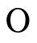
(zero) or 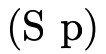 (i.e. the successor of some natural
number p), and that a boolean must be either  or
.
or
.
We can then define the function to be addition by structural recursion on the first argument:
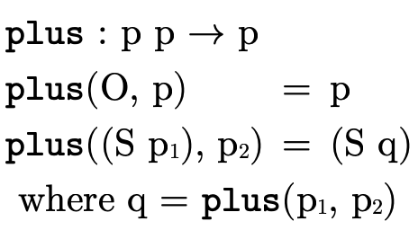
Example usages:
 will be defined to be a function that returns a
will be defined to be a function that returns a
 indicating whether the first argument is strictly
less than the second:
indicating whether the first argument is strictly
less than the second:
Example usages:
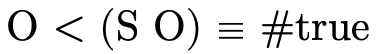
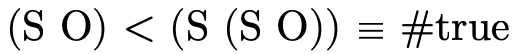
 will be defined to be a function that returns a
indicating whether the first argument is strictly
greater-than the second:
will be defined to be a function that returns a
indicating whether the first argument is strictly
greater-than the second:
Example usages:
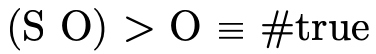
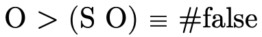
Things to note about these definitions (and about definitions in general):
The first line is the signature of the function and tells us how many arguments the function takes in addition to the types the inputs and outputs will have. e.g.,
 takes two natural numbers and returns a
natural number;
takes two natural numbers and returns a
natural number;Underscores that appear in the signature of a function are simply indicators for where arguments will go for functions with non-standard usage syntax. e.g.,
 does not use underscores because we use standard
function application syntax to talk about its application
(e.g.
does not use underscores because we use standard
function application syntax to talk about its application
(e.g.  ), but
), but  and use
underscores to indicate they will be used as infix
operators (i.e. we will write inbetween the
two arguments instead of at the front like
and use
underscores to indicate they will be used as infix
operators (i.e. we will write inbetween the
two arguments instead of at the front like  );
);Underscores used within the definition of the function (e.g. the second and third clauses for
 ) are
"wild-card" patterns and will match any input;
) are
"wild-card" patterns and will match any input;The order of function clauses matters! i.e. when determining which clause of a function applies to a particular input, the function tests each clause in order to see if the input matches the pattern(s);
In addition to pattern matching against the arguments themselves, "where clauses" also act as "pattern matching constraints" when present, e.g.
 ’s first clause
matches on any naturals and 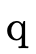 only
where 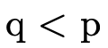 equals .
’s first clause
matches on any naturals and 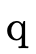 only
where 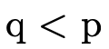 equals .When the same non-terminal variable appears in two places in a pattern, that pattern matches only if the same term appears in both places. Note: this does not apply to function signatures, where non-terminals only indicate what kind of terms are accepted/returned.
Important Note: We will "overload" certain convenient
symbols during the course of our discussion since we can
always distinguish them based on the types of arguments they
are given. e.g. we will define several "union" operations,
all of which will use the standard set-theoretic symbol
. But when we see and
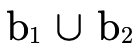, for example, we will know the former
usage of  is the version explicitly defined to
operate on
is the version explicitly defined to
operate on  ’s and the latter is the version explicitly
defined to operate on
’s and the latter is the version explicitly
defined to operate on  ’s. Like the function
definitions above, all function definitions will have
clear signatures describing the kinds of arguments they
operate on.
’s. Like the function
definitions above, all function definitions will have
clear signatures describing the kinds of arguments they
operate on.
2 Set-theoretic Types: An Overview
Set-theoretic types are a flexible and natural way for describing sets of values, featuring intuitive "logical combinators" in addition to traditional types for creating detailed specifications.
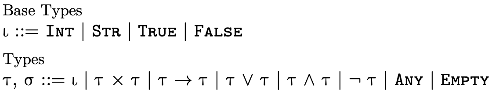
As figure 5 illustrates, languages with set-theoretic types feature (at least some of) the following logical type constructors:
 is the union of types
is the union of types  and
and  ,
describing values of type
,
describing values of type  or of
type
or of
type  ;
; is the intersection of types
is the intersection of types  and
and
 , describing values of both type
, describing values of both type  and
and  ;
;is the complement (or negation) of type
 , describing values not of type
, describing values not of type
 ;
;is the type describing all possible values; and
 is the type describing no values (i.e. 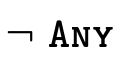).
is the type describing no values (i.e. 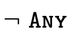).
Additionally, we may specify "specific top types", which for each kind of atomic type denotes all values of that particular kind:
is the type that denotes all pairs,
is the type that denotes all function, and
 is the type that denotes all base
values (i.e. integers, strings, and booleans).
is the type that denotes all base
values (i.e. integers, strings, and booleans).
Set theoretic types frequently appear in type systems which reason about dynamically typed languages (e.g. TypeScript, Flow, Typed Racket, Typed Clojure, Julia), but some statically typed languages use them as well (e.g. CDuce, Pony).
2.1 Subtyping
With set-theoretic types, the programmer (and the type
system) must be able to reason about how types that are not
equivalent relate. i.e., even though  is not the same
type as
is not the same
type as  , is it the case that a value of type
, is it the case that a value of type  will necessarily also be a value of type
will necessarily also be a value of type  ? In other
words, does hold (i.e. is τ a subtype of σ)?
? In other
words, does hold (i.e. is τ a subtype of σ)?
For example, consider the following subtyping question:
Clearly the two types are not equal... but we can also see that any pair whose first element is either an integer or a string and whose second element is a string (i.e. the type on the left-hand side) is indeed either a pair with an integer and a string or a pair with a string and a string (i.e. the type on the right-hand side). As a programmer then we might reasonably expect that anywhere a is expected, we could provide a value of type and things should work just fine.
Unfortunately, many (most?) systems that feature set-theoretic types use sound but incomplete reasoning to determine subtyping. This is because most type systems reason about subtyping via syntactic inference rules:
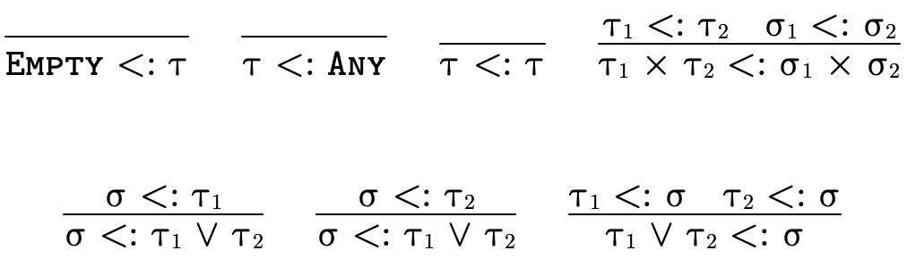
These rules allow us to conclude the statement below the
line if we can show that the statement(s) above the line
hold. Upsides to using a system built from rules like this
include (1) the rules can often directly be translated into
efficient code and (2) we can generally examine each rule
individually and decide if the antecedants necessarily imply
the consequent (i.e. determine if the rule is valid). The
downside is that such rules are incomplete for set-theoretic
types: it is impossible to derive all valid subtyping
judgments, e.g. we cannot conclude
 is a subtype of
is a subtype of
 even though it is
true.
even though it is
true.
For a complete treatment of subtyping for set-theoretic types, a semantic (instead of a syntactic) notion of subtyping is required.
At the time of writing this tutorial, CDuce may be the only example of an in-use language with a type system which features set-theoretic types and complete subtyping. This is not surprising since its developers are also the researchers that have pioneered the approaches we will discuss.
2.2 Semantic Subtyping
Instead of using a syntactic approach to reason about subtyping, we will instead us a semantic approach: types will simply denote sets of values in the language in the expected way.
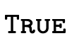 denotes singleton set 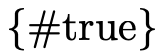;
denotes singleton set ;
denotes the set of integers;
 denotes the set of strings;
denotes the set of strings;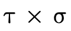 denotes the set of pairs whose first element is a value in
 and whose second element is a
value in
and whose second element is a
value in  (i.e. the cartesian product of
(i.e. the cartesian product of  and
and  );
);denotes the set of functions which can be applied to a value in
 and will return a value from
and will return a value from
 (if they return);
(if they return);denotes the union of the sets denoted by
 and
and  ;
;denotes the intersection of the sets denoted by
 and
and  ;
; denotes the complement of the set denoted
by ;
denotes the complement of the set denoted
by ; denotes the set of all values; and
denotes the set of all values; and denotes the empty set.
denotes the empty set.
Our description here omits many interesting subtleties and details about why this approach more or less "just works"; Frisch et al. (2008) thoroughly discuss this topic and much more and should be consulted if the reader is so inclined.
With our types merely denoting sets of values, subtyping can be determined by deciding type inhabitation (figure 7).
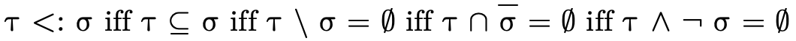
In other words, "is a particular type inhabited" is
really the only question we have to be able to answer since
asking  is the same as asking if
is uninhabited (i.e. does it denote the
empty set?).
is the same as asking if
is uninhabited (i.e. does it denote the
empty set?).
2.3 Deciding Inhabitation, Normal Forms
To efficiently decide type inhabitation for set-theoretic types we leverage some of the same strategies used to decide boolean satisfiability:
types are kept in disjunctive normal form (DNF), and
special data structures are used to efficiently represent DNF types.
2.3.1 Types in Disjunctive Normal Form
In addition to using DNF, it will be helpful to impose some additional structure to our normal form for types. To illustrate, first let us note that a DNF boolean formula :
can be reorganized slightly to "group" the positive and negative atoms in each conjunction:
We then observe that  can be described as a set of
pairs, with one pair
can be described as a set of
pairs, with one pair  for each clause in the original
disjunction, where
for each clause in the original
disjunction, where  is the set of positive atoms in the
clause and
is the set of positive atoms in the
clause and  is the set of negated atoms in the clause:
is the set of negated atoms in the clause:
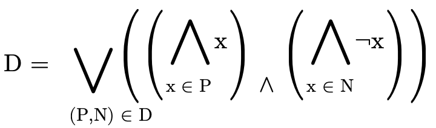
Similarly, any type  can be converted into a DNF, i.e.
a set of pairs , where for each clause
can be converted into a DNF, i.e.
a set of pairs , where for each clause  ,
contains the positive atoms (written a) which
are either a base type (
,
contains the positive atoms (written a) which
are either a base type ( ), a product type
(), or function type
(), and contains the negated atoms:
), a product type
(), or function type
(), and contains the negated atoms:

2.3.2 Partitioning Types
In addition to being able to convert any type into DNF, for
any type  there exists three specialized types
there exists three specialized types
 ,
,  , and
, and
 which contain only atoms of the
same kind such that:
which contain only atoms of the
same kind such that:

By representing a type in this way, we can efficiently divide types into non-overlapping segments which can each have their own DNF representation.
i.e., is a type whose atoms are all base types:
 is a DNF type whose atoms are all product types:
is a DNF type whose atoms are all product types:

and  is a DNF type whose atoms are all function
types:
is a DNF type whose atoms are all function
types:

To illustrate what this partitioning looks like in practice, here are a few very simple types and their equivalent "partitioned" representation:
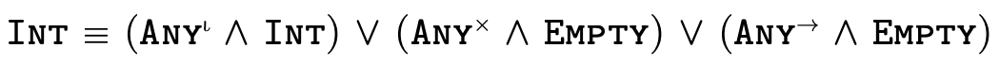 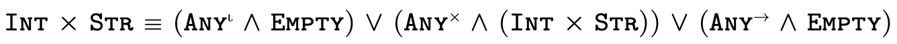 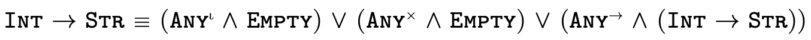 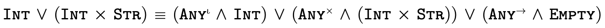
This technique for partitioning types into separate
non-overlapping DNFs—
3 Set-theoretic Type Representation
In Set-theoretic Types: An Overview we determined that
many type-related inquiries for set-theoretic types can be reduced to deciding type inhabitation (see Semantic Subtyping), and that because of this
a partitioned DNF representation (summarized in figure 8) may be useful.
In this section we focus on the latter issue: type representation (since how we represent types impacts how our algorithms decide type inhabitation). We will introduce several data structures, defining for each the binary operators union ("∪"), intersection ("∩"), and difference ("\") and the unary operator complement ("¬").
3.1 Types as Data Structures
In figure 8 we noted a type
can be conveniently deconstructed into three partitions,
allowing us to reason separately about the base type
( ), product type
(
), product type
( ), and function type
(
), and function type
( ) portion of a type:
) portion of a type:

Our representation of types will exactly mirror this structure.
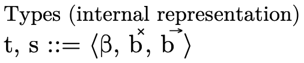
As figure 9 indicates, our internal representation of types is a 3-tuple:
 (the first field) is the portion which
contains base type information, corresponding to
(the first field) is the portion which
contains base type information, corresponding to
 ;
; (the second field) is the portion
corresponding to product type information, corresponding to
; and
(the second field) is the portion
corresponding to product type information, corresponding to
; and (the third field) is the portion
corresponding to function type information, corresponding to
(the third field) is the portion
corresponding to function type information, corresponding to
 ;
;
The specific top types used in
figure 8 are implicit in our
representation, i.e. we know what kind of type-information
each field is responsible for so we need not explicitly keep
around ,  , and
, and  in our
partitioned representation.
in our
partitioned representation.
The grammar and meaning for will be given in
Base DNF Representation and for  and
and
 will be given in Product and Function DNFs.
will be given in Product and Function DNFs.
3.1.1 Top and Bottom Type Representation
The representation of the "top type"  —
— ,
,  , and
, and
 in each respective field
(figure 10).
in each respective field
(figure 10).
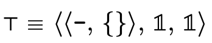
This mirrors the previous "partitioned" version of  we showed earlier:
we showed earlier:

The representation of the "bottom type"  —
— ,
,  , and
, and
 in each respective field
(figure 11).
in each respective field
(figure 11).
Again, this mirrors the previous "partitioned" version of
 we showed earlier:
we showed earlier:

Figure 12 describes how we
represent the specific top types  ,
,
 , and
, and  as data structures.
as data structures.
3.1.2 Type Operations
Binary operations on types benefit from our partitioned design: each is defined pointwise in the natural way on each partition; type complement is defined in terms of type difference, subtracting the negated type from the top type (figure 13).
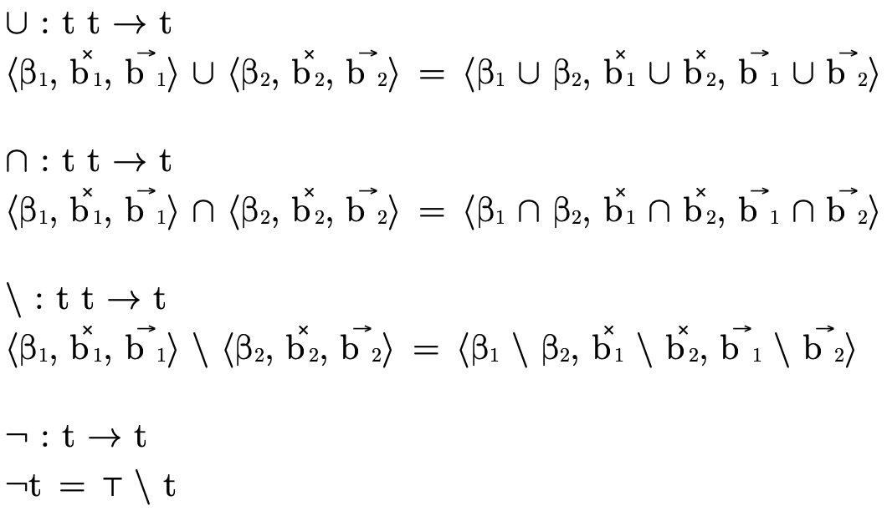
3.2 Base DNF Representation
We now examine how a DNF type with only base type atoms can
be efficiently represented (i.e. the base portion  of a type described in
figure 8 and the
of a type described in
figure 8 and the  field
in our representation of types described in
figure 9).
field
in our representation of types described in
figure 9).
Although any type can be represented by some DNF type, in
the case of base types things can be simplified even
further! Any DNF type  whose atoms are all base
types is equivalent to either
whose atoms are all base
types is equivalent to either
a union of base types 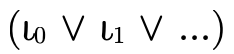, or
a negated union of base types .
To see why this is the case, it may be helpful to recall
that each base type is disjoint (i.e. no values inhabit more
than one base type), note that this is obviously true for
 ,
,  , and any a single base type or
negated base type 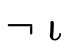, and then examine the
definitions of base type operations presented in
figure 15 and note how the
representation is naturally maintained.
, and any a single base type or
negated base type 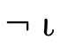, and then examine the
definitions of base type operations presented in
figure 15 and note how the
representation is naturally maintained.
Because any DNF of base types can be represented by a set of
base types (i.e. the elements in the union) and a polarity
(i.e. is the union negated or not), we represent the base
portion of a type  using a tuple with these two pieces
of information (figure 14).
using a tuple with these two pieces
of information (figure 14).
The first field is the polarity flag (either for a union or for a negated union) and the second field is the set of base types 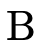 in the union.
The top base type (i.e. the type which denotes all base type values) is a negated empty set 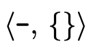 (i.e. it is not the case that this type contains no base values) and the bottom base type (the type which denotes no base type values) is a positive empty set (i.e. it is the case that this type contains no base values).
3.2.1 Base DNF Operations
Operations on these base type representations boil down to selecting the appropriate set-theoretic operation to combine the sets based on the polarities (figure 15).
Base type negation is not shown (because it is not used anywhere in this model), but would simply require "flipping" the polarity flag (i.e. the first field in the tuple).
3.3 Product and Function DNFs
In order to efficiently represent a DNF type with only
product or function type atoms (i.e. the  and
and
 portions of a type described in
figure 8 and the
and
portions of a type described in
figure 8 and the
and  fields in our type representation described
in figure 9) we will use a binary decision
diagram (BDD).
fields in our type representation described
in figure 9) we will use a binary decision
diagram (BDD).
First we include a brief review of how BDDs work, then we discuss how they can be used effectively to represent our product/function DNF types.
3.3.1 Binary Decision Diagrams
A binary decision diagram (BDD) is a tree-like data structure which provides a convenient way to represent sets or relations.
For example, the boolean formula
 has truth table:
has truth table:
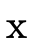
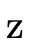
0
0
0
1
0
0
1
0
0
1
0
0
0
1
1
1
1
0
0
0
1
0
1
0
1
1
0
1
1
1
1
1
and can be represented with the following BDD:
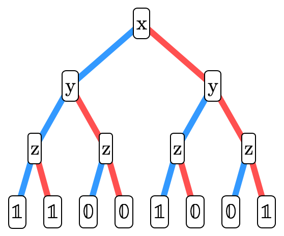
Each node in the tree contains a boolean variable. A node’s left subtree (the blue edge) describes the "residual formula" for when that variable is true. The node’s right subtree (the red edge) describes the "residual formula" when that variable is false. We invite the reader to compare the truth table and corresponding BDD until they are convinced they indeed represent the same boolean formula. It may be useful to observe that the leaves in the BDD correspond to the right-most column in the truth table.
3.3.2 Types as BDDs?
BDDs can also naturally encode set-theoretic types (in our case, DNF product or function types). Each node has a function/product type associated with it; henceforth we will call this associated type the atom of the node. A node’s left sub-tree (the blue edge) describes the "residual type" for when the atom is included in the overall type. A node’s right sub-tree (the red edge) describes the "residual type" for when the atom’s negation is included in the overall type.
For example, here we have encoded the type :
and here is 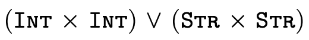:
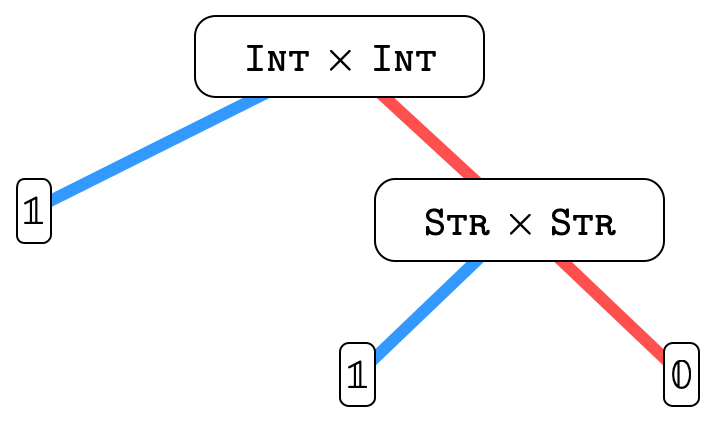
Basically, each path in the tree represents a clause in the
overall DNF, so the overall type is the union of all the
possibly inhabited paths (i.e. paths that end in  ).
).
In other words, for an arbitrary (type) BDD
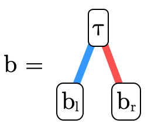
we would interpret the meaning of  (written〚〛)
as follows:
(written〚〛)
as follows:
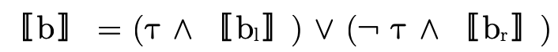
where  is interpreted as
is interpreted as  and as
and as
 .
.
There is, however, a well-known problem with BDDs we will
want to avoid: repeatedly unioning trees can lead to
significant increases in size. This is particularly
frustrating because—
3.3.3 Types as Lazy BDDs!
Because there is no interesting impact on inhabitation when
computing unions, we can use "lazy" BDDs—
Nodes in lazy BDDs have—
In other words, for an arbitrary lazy (type) BDD
we would interpret the meaning of  (written〚
(written〚 〛)
as follows:
〛)
as follows:
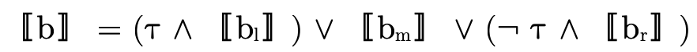
where  is interpreted as
is interpreted as  and
and  as
as
 .
.
Figure 16 describes in detail our representation for the DNF function/product portions of a type as lazy BDDs. Note that
 describes a lazy BDD of either
functions or products and is useful for describing functions
that are parametric w.r.t. which kind of atom they
contain;
describes a lazy BDD of either
functions or products and is useful for describing functions
that are parametric w.r.t. which kind of atom they
contain;and
 are the leaves in our BDDs,
interpreted as
are the leaves in our BDDs,
interpreted as  and
and  respectively;
respectively;describes a BDD node: a 4-tuple with an atom and three sub-trees (whose meaning are described earlier in this section);
an atom (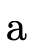) is either a product or a function type—
a given BDD will only contain atoms of one kind or the other; and  and
and  simply allow us to be more
specific and describe what kind of atoms a particular
simply allow us to be more
specific and describe what kind of atoms a particular  contains.
contains.
Although not explicit in the grammar, these trees are
constructed using an ordering on atoms that we leave up to
the reader to implement (note that this implies types, BDDs,
etc must all also have an ordering defined since these data
structures are mutually dependent). A simple lexicographic
ordering would work... a fast (possibly non-deterministic?)
hash code-based ordering should also work... the choice is
yours. The ordering—
To make some definitions more clear, "accessor functions" which extract the various fields of a node are defined in figure 17.
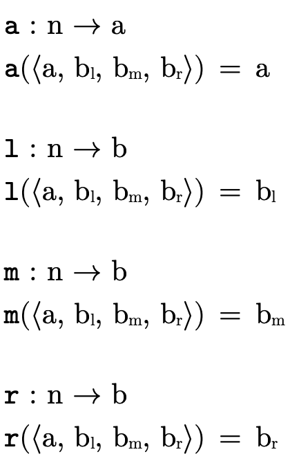
Finally, we use a "smart constructor"—
3.3.4 Lazy BDD Operations
The operations on lazy BDDs can be understood by again considering how we logically interpret a BDD:
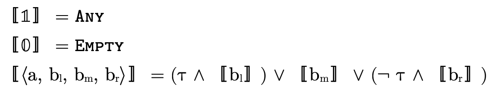
Also, recall that BDD binary operations will only ever be used on two BDDs with atoms of the same kind.
Figure 19 describes BDD union, i.e. logical "or".
Figure 20 describes BDD intersection, i.e. logical "and".

Figure 21 describes BDD difference.
Figure 22 describes BDD complement, i.e. logical "not".
3.4 Parsing and Example Types
Figure 23 defines a function that converts the user-friendly types shown in figure 5 into the internal representation we have just finished describing:

Here are a few simple examples of what types look like once parsed:
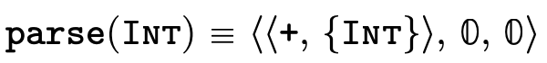
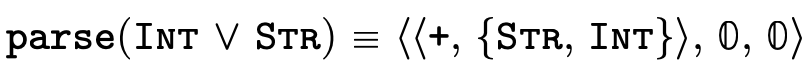

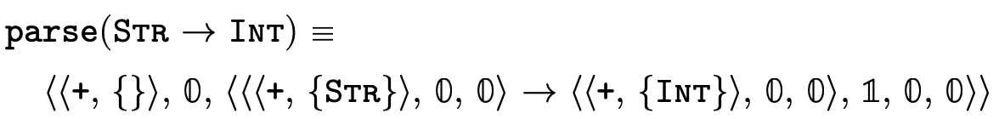
4 Implementing Semantic Subtyping
Because we are working with set-theoretic types, we are free to define subtyping purely in terms of type inhabitation (see figure 7), which is precisely what we do (figure 24).
Figure 24: (semantic) subtyping, defined in terms of type emptiness
In the remainder of this section we examine how to decide type inhabitation using the data structures introduced in Set-theoretic Type Representation.
4.1 Deciding Type Inhabitation
A DNF type is uninhabited exactly when each clause in the overall disjunction is uninhabited. With our DNF types partitioned into base, product, and function segments (see figure 8):
we simply need ways to check if the base component
( ), product component (
), product component ( ), and function
component () each are empty.
), and function
component () each are empty.
As figure 25 suggests, the
representation of the base type portion is simple enough
that we can pattern match on it directly to check if it is
empty (recall that  is the bottom/empty
is the bottom/empty
 ).
).
For deciding if the product and function components— which are
defined in Product Type Inhabitation and
Function Type Inhabitation respectively.
which are
defined in Product Type Inhabitation and
Function Type Inhabitation respectively.
In these sections, we will use non-terminals and
 to represent a collection of atoms
(see figure 26).
to represent a collection of atoms
(see figure 26).
4.1.1 Product Type Inhabitation
To decide if the product portion of a type is uninhabited, we recall (from Partitioning Types) that it is a union of conjunctive clauses, each of which can be described with a pair of two sets (P,N), where P contains the positive product types and N the negated product types:
For  to be uninhabited, each such clause
must be uninhabited. Checking that a given clause (P,N) is
uninhabited occurs in two steps:
to be uninhabited, each such clause
must be uninhabited. Checking that a given clause (P,N) is
uninhabited occurs in two steps:
accumulate the positive type information in P into a single product
 (i.e. fold over the products
in P, accumulating their pairwise intersection in a single
product),
(i.e. fold over the products
in P, accumulating their pairwise intersection in a single
product),check that for each N′ ⊆ N the following holds:
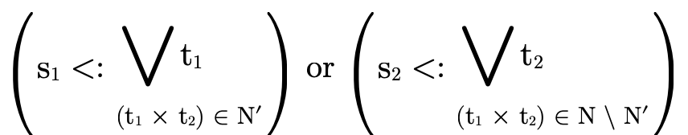
The first step is justified because pairs are covariant in
their fields, i.e. if something is a  and a then it is also a
.
and a then it is also a
.
The second step is more complicated. To understand, let us
first note that if we know something is a product of some
sort and also that it is of type ,
then either it is a product whose first field is
or it is a product whose second field
is  (i.e. logically we are applying DeMorgan’s
law). And for the clause to be uninhabited, it must be
uninhabited for both possibilities (again, intuitively an
"or" is false only when all its elements are false). So by
exploring each subset 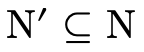 and verifying that either the
left-hand side of the product is empty with the negated
left-hand sides in N or the right-hand side is empty
for the negated right-hand sides in the complement (i.e. ), we are exploring all possible combinations of negated
first and second fields from N and ensuring each possible
combination is indeed uninhabited.
(i.e. logically we are applying DeMorgan’s
law). And for the clause to be uninhabited, it must be
uninhabited for both possibilities (again, intuitively an
"or" is false only when all its elements are false). So by
exploring each subset 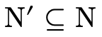 and verifying that either the
left-hand side of the product is empty with the negated
left-hand sides in N or the right-hand side is empty
for the negated right-hand sides in the complement (i.e. ), we are exploring all possible combinations of negated
first and second fields from N and ensuring each possible
combination is indeed uninhabited.
We describe an algorithm to perform these computations in
figure 27. The function  walks over each path in the product BDD accumulating the
positive information in a product and the
negative information in the set N. Then at each non-trivial
leaf in the BDD, we call the helper function
walks over each path in the product BDD accumulating the
positive information in a product and the
negative information in the set N. Then at each non-trivial
leaf in the BDD, we call the helper function  which searches the space of possible negation combinations
ensuring that for each possibility the pair ends up being
uninhabited.
which searches the space of possible negation combinations
ensuring that for each possibility the pair ends up being
uninhabited.
Figure 27: functions for checking if a product BDD is uninhabited
Note that is designed with a "short-circuiting"
behavior, i.e. as we are exploring each possible combination
of negations, if a negated field we are considering would
negate the corresponding positive field (e.g.
) then we can stop searching for
emptiness on that side, otherwise we subtract that negated
type from the corresponding field and we keep searching the
remaining possible negations checking for emptiness. If we
reach the base case when N is the empty set, then we have
failed to show the product is empty and we return false.
(Note that  checks for emptiness before calling
checks for emptiness before calling
 , otherwise we would need to check
, otherwise we would need to check  and
and
 for emptiness in the base case of
for emptiness in the base case of  ).
).
4.1.2 Function Type Inhabitation
Just like with products, to show that the function portion
of a type is uninhabited we show that each clause in the
DNF—
— such that
such that
(i.e.  is in the domain of the function) and that
for each ,
is in the domain of the function) and that
for each ,
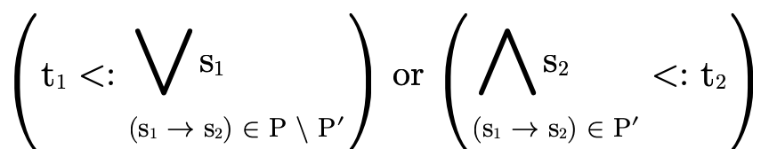
Basically we are verifying that for each possible set of
arrows P′ which must handle a value of type  (i.e. the left-hand check fails), those arrows must map the
value to
(i.e. the left-hand check fails), those arrows must map the
value to  (the right-hand check), which is a
contradiction since we know this function is not of
type
(the right-hand check), which is a
contradiction since we know this function is not of
type  and therefore this function type is
uninhabited.
and therefore this function type is
uninhabited.
Figure 28: functions for checking if a function BDD is uninhabited
We implement this algorithm with the function  defined in figure 28. It walks each
path in a function BDD accumulating the domain along the way
and collecting the negated function types in the variable
. At the non-trivial leaves of the BDD, it calls
defined in figure 28. It walks each
path in a function BDD accumulating the domain along the way
and collecting the negated function types in the variable
. At the non-trivial leaves of the BDD, it calls
 with each function type
with each function type  until it finds a contradiction (i.e. an arrow that satisfies
the above described equation) or runs out of negated
function types.
until it finds a contradiction (i.e. an arrow that satisfies
the above described equation) or runs out of negated
function types.
 is the function which explores each set of
arrows P′ ⊆ P checking that one of the two clauses in the
above noted disjunction is true. Note that in the initial
call from we negate the original
is the function which explores each set of
arrows P′ ⊆ P checking that one of the two clauses in the
above noted disjunction is true. Note that in the initial
call from we negate the original  : this
is because although we are interested in ,
the equivalent "contrapositive" statement
is more convenient to
accumulatively check as we iterate through the function
types in
: this
is because although we are interested in ,
the equivalent "contrapositive" statement
is more convenient to
accumulatively check as we iterate through the function
types in  .
.
In the base case of  when P has been exhausted,
the function checks that either the arrows not in P′ could
have handled the value of (the original) type
when P has been exhausted,
the function checks that either the arrows not in P′ could
have handled the value of (the original) type
 (i.e. is
(i.e. is  now empty), otherwise it checks
if the value we mapped the input to must be a subtype of
(the original) type
now empty), otherwise it checks
if the value we mapped the input to must be a subtype of
(the original) type  (i.e. is
(i.e. is  now
empty).
now
empty).
In the case where  has not been exhausted, we examine the
first arrow
has not been exhausted, we examine the
first arrow  in
in  and check two cases:
one for when that arrow is not in
and check two cases:
one for when that arrow is not in  (i.e. when it is in
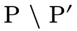) and one for when it is in
(i.e. when it is in
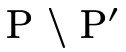) and one for when it is in  .
.
The first clause in the conjunction of the non-empty P case
is for when  is not in
is not in  . It first checks
if the set of arrows we’re not considering (i.e. P \ P′)
would handle a value of type
. It first checks
if the set of arrows we’re not considering (i.e. P \ P′)
would handle a value of type  (i.e.
), and if not it remembers that
(i.e.
), and if not it remembers that
 is not in P′ by subtracting
is not in P′ by subtracting  from
for the recursive call which keeps searching.
from
for the recursive call which keeps searching.
The second clause in the conjunction is for when
is in  . As we noted, instead of
checking
. As we noted, instead of
checking  (resembling the original
mathematical description above), it turns out to be more
convenient to check the contrapositive statement
(recall that
(resembling the original
mathematical description above), it turns out to be more
convenient to check the contrapositive statement
(recall that  was actually
negated originally when was called). First we
check if having
was actually
negated originally when was called). First we
check if having  in
in  means we would
indeed map a value of type
means we would
indeed map a value of type  to a value of type
to a value of type
 (i.e. the
(i.e. the  check). If so
we are done, otherwise we recur while remembering that
check). If so
we are done, otherwise we recur while remembering that
 is in P′ by adding to
(i.e. "subtracting" negated
is in P′ by adding to
(i.e. "subtracting" negated  from the negated
from the negated  we are accumulating by using intersection).
we are accumulating by using intersection).
5 Other Key Type-level Functions
In addition to being able to decide type inhabitation, we need to be able to semantically calculate types for the following situations:
projection from a product,
a function’s domain, and
the result of function application.
5.1 Product Projection
In a language with syntactic types, calculating the type of the first or second projection of a pair simply involves matching on the product type and extracting the first or second field. In a language with semantic types, however, we could be dealing with a complex pair type which uses numerous set-theoretic constructors and we can no longer simply pattern match to determine the types of its projections. Instead, we must reason semantically about the fields.
To begin, first note that if a type is a subtype of
 (i.e. it is indeed a pair), we can focus on
the product portion of the type:
(i.e. it is indeed a pair), we can focus on
the product portion of the type:

Projecting the field  from
from  (where
(where  ∈
{1,2}) involves unioning each positive type for field
∈
{1,2}) involves unioning each positive type for field  in the DNF intersected with each possible combination of
negations for that field:
in the DNF intersected with each possible combination of
negations for that field:
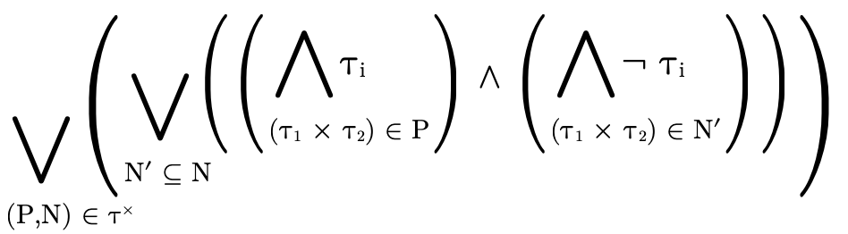
This calculation follows the same line of reasoning involved with deciding product type inhabitation (see Product Type Inhabitation), i.e. it considers each logical clause in the DNF of the type and unions them.
Actually that equation is sound but a little too coarse: it
only considers the type of field  and thus may include
some impossible cases where the other field would
have been
and thus may include
some impossible cases where the other field would
have been  . In other words, if j is an
index and j ≠ i (i.e. it is the index of the other
field), then as we’re calculating the projection of
i, we’ll want to "skip" any cases N′ where
the following is true:
. In other words, if j is an
index and j ≠ i (i.e. it is the index of the other
field), then as we’re calculating the projection of
i, we’ll want to "skip" any cases N′ where
the following is true:
i.e. cases where the other field j is uninhabited. If we incorporate that subtlety, our inner loop will end up containing a conditional statement:
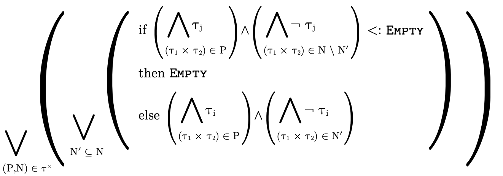
5.1.1 Implementing Product Projection
As was suggested by our use of index variables i and
j in the previous section’s discussion, we implement
product projection as a single function indexed by some
 ∈ {1,2} and use (defined in
figure 29) to return the appropriate type
in non-empty clauses.
∈ {1,2} and use (defined in
figure 29) to return the appropriate type
in non-empty clauses.
Figure 29: function for selecting a type during product projection
Because projection can fail, we have the function
 as the "public interface" to projection.
performs important preliminary checks
(i.e. is this type actually a product?) before extracting
the product portion of the type and passing it to the
"internal" function where the real work begins.
as the "public interface" to projection.
performs important preliminary checks
(i.e. is this type actually a product?) before extracting
the product portion of the type and passing it to the
"internal" function where the real work begins.
 walks the BDD, accumulating for each path (i.e.
each clause in the DNF) the positive type information for
each field in variables and
walks the BDD, accumulating for each path (i.e.
each clause in the DNF) the positive type information for
each field in variables and  respectively.
Along the way, if either
respectively.
Along the way, if either  or
or  are empty we
can ignore that path. Otherwise at non-trivial leaves we
call the helper function which traverses
the possible combinations of negations, calculating and
unioning the type of field
are empty we
can ignore that path. Otherwise at non-trivial leaves we
call the helper function which traverses
the possible combinations of negations, calculating and
unioning the type of field  for each possibility.
for each possibility.
5.2 Function Domain
Similar to product projection, deciding the domain of a function in a language with set-theoretic types cannot be done using simple pattern matching; we must reason about the domain of a function type potentially constructed with intersections and/or unions.
To do this, first note that for an intersection of arrows, the domain is equivalent to the union of each of the domains (i.e. the function can accept any value any of the various arrows can collectively accept):
Second, note that for a union of arrows, the domain is equivalent to the intersection of each of the domains (i.e. the function can only accept values that each of the arrows can accept):
With those two points in mind, we can deduce that the domain of an arbitrary function type

is the following intersection of unions:
5.2.1 Implementing Function Domain
We perform those domain calculations with the functions defined in figure 31.
 first checks if the type is indeed a
function (i.e. is it a subtype of ), if so it
then calls with the function portion of the type
() to begin traversing the BDD calculating the
intersection of the union of the respective domains.
first checks if the type is indeed a
function (i.e. is it a subtype of ), if so it
then calls with the function portion of the type
() to begin traversing the BDD calculating the
intersection of the union of the respective domains.
5.3 Function Application
When applying an arbitrary function to a value, we
must be able to determine the type of the result. If the
application is simple, e.g. a function of type
applied to an argument of type  ,
calculating the result is trivial (). However, when
we are dealing with an arbitrarily complicated function type
which could contain set-theoretic connectives, deciding the
return type is a little more complicated. As we did in the
previous section, let us again reason separately about how
we might apply intersections and unions of function types to
guide our intuition.
,
calculating the result is trivial (). However, when
we are dealing with an arbitrarily complicated function type
which could contain set-theoretic connectives, deciding the
return type is a little more complicated. As we did in the
previous section, let us again reason separately about how
we might apply intersections and unions of function types to
guide our intuition.
In order to apply a union of function types, the argument
type  of course would have to be in the domain of each
function (see the discussion in the previous section). The
result type of the application would then be the union of
the ranges:
of course would have to be in the domain of each
function (see the discussion in the previous section). The
result type of the application would then be the union of
the ranges:

This corresponds to the logical observation that if we know P and that either P implies Q or P implies R, then we can conclude that either Q or R holds.
When applying an intersection of function types, the result type is the combination (i.e. intersection) of each applicable arrow’s range. This more or less corresponds to the logical observation that if we know P and that both P implies Q and P implies R, then we can conclude that Q and R hold.
Combining these lines of reasoning we can deduce that when considering a function type

being applied to an argument of type  , we first verify
that
, we first verify
that  is in the domain of
is in the domain of  (i.e. using
) and then calculate the result type of the
application as follows:
(i.e. using
) and then calculate the result type of the
application as follows:
Basically, we traverse each clause in the DNF of the
function type (i.e. each pair (P,N)) unioning the results.
In each clause (P,N), we consider each possible set of
arrows P′ in P and if that set would necessarily have to
handle a value of type . For those sets P′ that would
necessarily handle the input, we intersect their arrow’s
result types (otherwise we ignore it by returning  for that clause). This reasoning resembles that which was
required to decide function type inhabitation (see
Function Type Inhabitation), i.e. both are
considering which combinations of arrows necessarily need to
be considered to perform the relevant calculation.
for that clause). This reasoning resembles that which was
required to decide function type inhabitation (see
Function Type Inhabitation), i.e. both are
considering which combinations of arrows necessarily need to
be considered to perform the relevant calculation.
5.3.1 Implementing Function Application
Figure 32 describes the functions which
calculate the result type for function application.
 first ensures that the alleged function
type is indeed a function with the appropriate domain before
calling
first ensures that the alleged function
type is indeed a function with the appropriate domain before
calling  to calculate the result type of the
application.
to calculate the result type of the
application.  then traverses the BDD combining
recursive results via union. As it traverses down a BDD
node’s left edge (i.e. when a function type is a
member of a set P) it makes two recursive calls: one for
when that arrow is in P′ (where we intersect the
arrow’s range
then traverses the BDD combining
recursive results via union. As it traverses down a BDD
node’s left edge (i.e. when a function type is a
member of a set P) it makes two recursive calls: one for
when that arrow is in P′ (where we intersect the
arrow’s range  with the result type accumulator
with the result type accumulator
 ) and one for when it is not in P′ (where we
subtract
) and one for when it is not in P′ (where we
subtract  from the argument type parameter
from the argument type parameter  to track if the arrows in P \ P′ can handle the argument
type). At non-trivial leaves where
to track if the arrows in P \ P′ can handle the argument
type). At non-trivial leaves where  is not empty
(i.e. when we’re considering a set of arrows P′ which
necessarily would need to handle the argument) we
return the accumulated range type (
is not empty
(i.e. when we’re considering a set of arrows P′ which
necessarily would need to handle the argument) we
return the accumulated range type ( ) for that set of
arrows. Note that we can "short-circuit" the calculation
when either of the accumulators ( and )
are empty, which is important to keeping the complexity
of this calculation reasonable.
) for that set of
arrows. Note that we can "short-circuit" the calculation
when either of the accumulators ( and )
are empty, which is important to keeping the complexity
of this calculation reasonable.
6 Strategies for Testing
For testing an implementation of the data structures and algorithms described in this tutorial there are some convenient properties we can leverage:
(1) any type generated by the grammar of types is a valid type;
(2) since these types logically correspond to sets, we can create tests based on well-known set properties and ensure our types behave equivalently; and
(3) we have "naive", inefficient mathematical descriptions of many of the algorithms in addition to more efficient algorithms which purport to perform the same calculation.
With these properties in mind, in addition to writing simple "unit tests" that are written entirely by hand we can use a tool such as QuickCheck (Claessen and Hughes 2000) or redex-check (Fetscher et al. 2015) to generate random types and verify our implementation respects well-known set properties. Additionally, we can write two implementations of algorithms which have both a naive and efficient description and feed them random input while checking that their outputs are always equivalent.
The model we used to generate the pseudo code in this tutorial uses these testing strategies. This approach helped us discover several subtle bugs in our implementation at various points that simpler hand-written unit tests had not yet exposed.